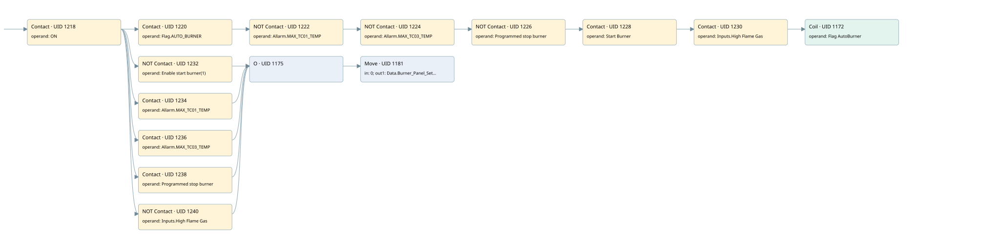

burner servomotor control fb41 pid mode
burner control · 검색 색인 순서 17 · 원본 내부 NID 추정 16
백업 PLF 원본의 2699396 바이트 위치에서 복원한 XML. 검색 문서 1870의 객체 키 16102200eb10000000000000와 연결했다. 이름 해석 15/15개. 남은 RefId는 상수 또는 미해석 참조다.
연결 구조 다시 그리기
원본 Part/PCon/Wire를 이용한 연결도다. TIA 화면의 래더 배치 또는 실행 결과를 재현한 그림은 아니다. 핀 연결은 아래 표와 원본 XML을 기준으로 읽는다. 노드 위에 마우스를 두면 피연산자 이름을 볼 수 있다.

접점·코일·블록과 피연산자
| Part UID | Gate | Negated 핀 | 연결 피연산자 |
|---|---|---|---|
| 1218 | Contact | operand = ON | |
| 1220 | Contact | operand = Flag.AUTO_BURNER | |
| 1222 | Contact | operand | operand = Allarm.MAX_TC01_TEMP |
| 1224 | Contact | operand | operand = Allarm.MAX_TC03_TEMP |
| 1226 | Contact | operand | operand = Programmed stop burner |
| 1228 | Contact | operand = Start Burner | |
| 1230 | Contact | operand = Inputs.High Flame Gas | |
| 1172 | Coil | operand = Flag AutoBurner | |
| 1232 | Contact | operand | operand = Enable start burner(1) |
| 1234 | Contact | operand = Allarm.MAX_TC01_TEMP | |
| 1236 | Contact | operand = Allarm.MAX_TC03_TEMP | |
| 1238 | Contact | operand = Programmed stop burner | |
| 1240 | Contact | operand | operand = Inputs.High Flame Gas |
| 1175 | O | ||
| 1181 | Move | in = 0; out1 = Data.Burner_Panel_SetPoint |
접점 경로를 펼친 조건식
Contact·O/A·비교기의 원본 연결을 읽기 쉽게 펼친 보조 해석이다. POWER는 전원 레일 시작을 뜻한다. 호출 블록·에지·타이머의 내부 동작과 다중 쓰기 순서는 이 표로 실행 검증하지 않았다. 미해석 핀과 RefId는 원문 연결표에서 확인한다.
| UID | 동작 | 대상 | 원본 접점 경로 | 내용 |
|---|---|---|---|---|
| 1172 | Coil | Flag AutoBurner | ((((((ON AND Flag.AUTO_BURNER) AND NOT [Allarm.MAX_TC01_TEMP]) AND NOT [Allarm.MAX_TC03_TEMP]) AND NOT [Programmed stop burner]) AND Start Burner) AND Inputs.High Flame Gas) | 조건에 따른 Coil 기록 |
| 1181 | Move | Data.Burner_Panel_SetPoint | ((ON AND NOT [Enable start burner(1)]) OR (ON AND Allarm.MAX_TC01_TEMP) OR (ON AND Allarm.MAX_TC03_TEMP) OR (ON AND Programmed stop burner) OR (ON AND NOT [Inputs.High Flame Gas])) | Move 입력 0 |
원본 배선 연결
| Wire UID | 동일 Wire 연결 끝점 |
|---|---|
| 1242 | Powerrail {} ↔ Part 1218.in |
| 1199 | ORef 1184 (ON) ↔ Part 1218.operand |
| 1219 | Part 1218.out ↔ Part 1220.in ↔ Part 1232.in ↔ Part 1234.in ↔ Part 1236.in ↔ Part 1238.in ↔ Part 1240.in |
| 1200 | ORef 1185 (Flag.AUTO_BURNER) ↔ Part 1220.operand |
| 1221 | Part 1220.out ↔ Part 1222.in |
| 1201 | ORef 1186 (Allarm.MAX_TC01_TEMP) ↔ Part 1222.operand |
| 1223 | Part 1222.out ↔ Part 1224.in |
| 1202 | ORef 1187 (Allarm.MAX_TC03_TEMP) ↔ Part 1224.operand |
| 1225 | Part 1224.out ↔ Part 1226.in |
| 1203 | ORef 1188 (Programmed stop burner) ↔ Part 1226.operand |
| 1227 | Part 1226.out ↔ Part 1228.in |
| 1204 | ORef 1189 (Start Burner) ↔ Part 1228.operand |
| 1229 | Part 1228.out ↔ Part 1230.in |
| 1205 | ORef 1190 (Inputs.High Flame Gas) ↔ Part 1230.operand |
| 1231 | Part 1230.out ↔ Part 1172.in |
| 1207 | ORef 1191 (Flag AutoBurner) ↔ Part 1172.operand |
| 1208 | ORef 1192 (Enable start burner(1)) ↔ Part 1232.operand |
| 1233 | Part 1232.out ↔ Part 1175.in1 |
| 1209 | ORef 1193 (Allarm.MAX_TC01_TEMP) ↔ Part 1234.operand |
| 1235 | Part 1234.out ↔ Part 1175.in2 |
| 1210 | ORef 1194 (Allarm.MAX_TC03_TEMP) ↔ Part 1236.operand |
| 1237 | Part 1236.out ↔ Part 1175.in3 |
| 1211 | ORef 1195 (Programmed stop burner) ↔ Part 1238.operand |
| 1239 | Part 1238.out ↔ Part 1175.in4 |
| 1212 | ORef 1196 (Inputs.High Flame Gas) ↔ Part 1240.operand |
| 1241 | Part 1240.out ↔ Part 1175.in5 |
| 1213 | Part 1175.out ↔ Part 1181.en |
| 1215 | ORef 1197 (0) ↔ Part 1181.in |
| 1216 | Part 1181.out1 ↔ ORef 1198 (Data.Burner_Panel_SetPoint) |
식별자 해석 근거 15개
| ORef UID | RefId | 이름 | IdentXmlPart 파일 | 해석 방법 |
|---|---|---|---|---|
| 1184 | 1 | ON | 0582-IdentXmlPart.xml | UID/RID + search-text + NID agreement |
| 1185 | 147 | Flag.AUTO_BURNER | 0585-IdentXmlPart.xml | UID/RID + search-text + NID agreement |
| 1186 | 68 | Allarm.MAX_TC01_TEMP | 0585-IdentXmlPart.xml | UID/RID + search-text + NID agreement |
| 1187 | 69 | Allarm.MAX_TC03_TEMP | 0585-IdentXmlPart.xml | UID/RID + search-text + NID agreement |
| 1188 | 54 | Programmed stop burner | 0582-IdentXmlPart.xml | UID/RID + search-text + NID agreement |
| 1189 | 144 | Start Burner | 0582-IdentXmlPart.xml | UID/RID + search-text + NID agreement |
| 1190 | 229 | Inputs.High Flame Gas | 0585-IdentXmlPart.xml | UID/RID + search-text + NID agreement |
| 1191 | 149 | Flag AutoBurner | 0582-IdentXmlPart.xml | UID/RID + search-text + NID agreement |
| 1192 | 92 | Enable start burner(1) | 0582-IdentXmlPart.xml | UID/RID + search-text + NID agreement |
| 1193 | 68 | Allarm.MAX_TC01_TEMP | 0585-IdentXmlPart.xml | UID/RID + search-text + NID agreement |
| 1194 | 69 | Allarm.MAX_TC03_TEMP | 0585-IdentXmlPart.xml | UID/RID + search-text + NID agreement |
| 1195 | 54 | Programmed stop burner | 0582-IdentXmlPart.xml | UID/RID + search-text + NID agreement |
| 1196 | 229 | Inputs.High Flame Gas | 0585-IdentXmlPart.xml | UID/RID + search-text + NID agreement |
| 1197 | 52 | 0 | 0586-IdentXmlPart.xml | literal candidate: UID/RID/NID + nearby named declarations + search-text agreement |
| 1198 | 71 | Data.Burner_Panel_SetPoint | 0585-IdentXmlPart.xml | UID/RID + search-text + NID agreement |
검색 코드 보조 자료
참조 명칭을 찾기 위한 자료이며 실행 순서나 AND/OR 관계는 위 연결표로 확인한다.
"on" "flag".auto_burner "allarm".max_tc01_temp "allarm".max_tc03_temp "programmed stop burner" "start burner" "inputs"."high flame gas" "flag autoburner" "enable start burner(1)" move 0 "data".burner_panel_setpoint "allarm".max_tc01_temp "allarm".max_tc03_temp "programmed stop burner" "inputs"."high flame gas"